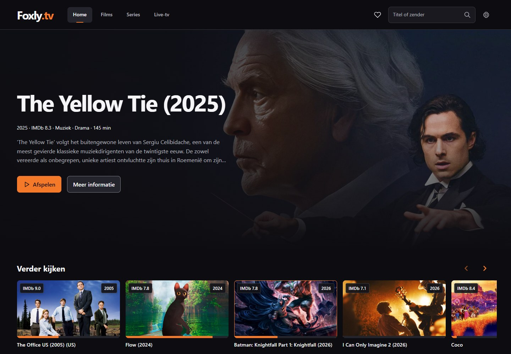
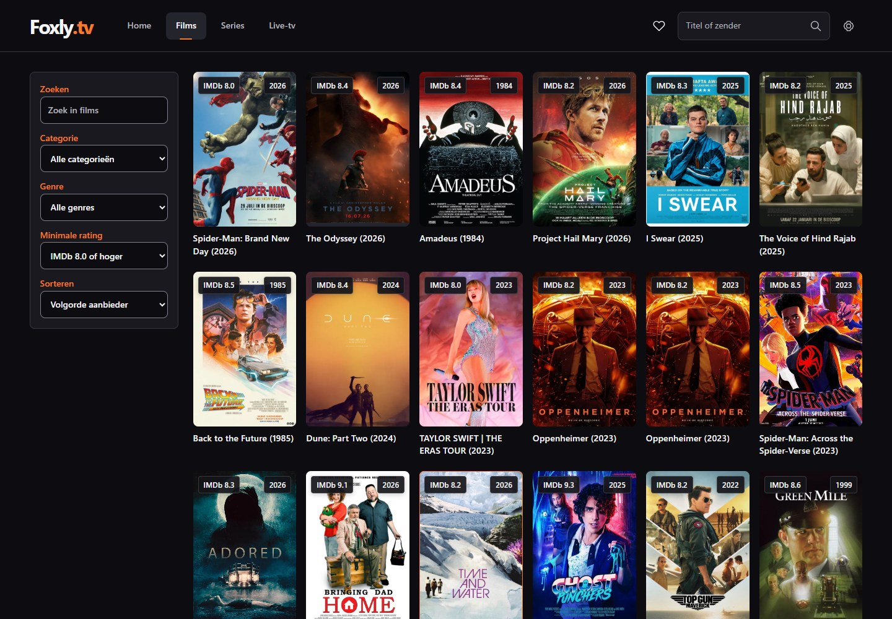
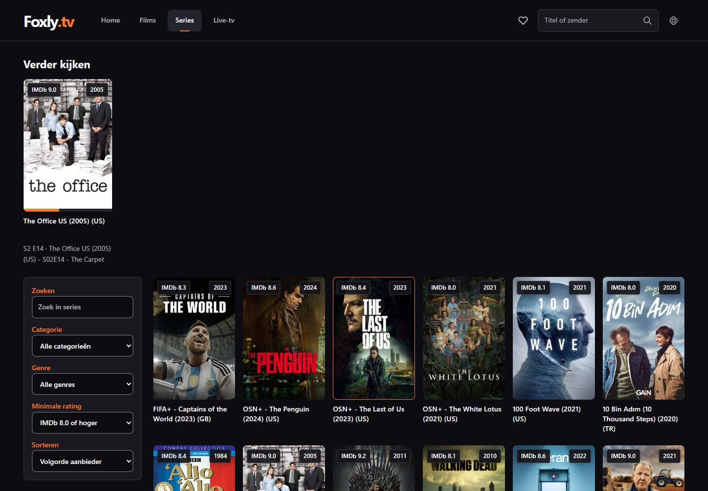
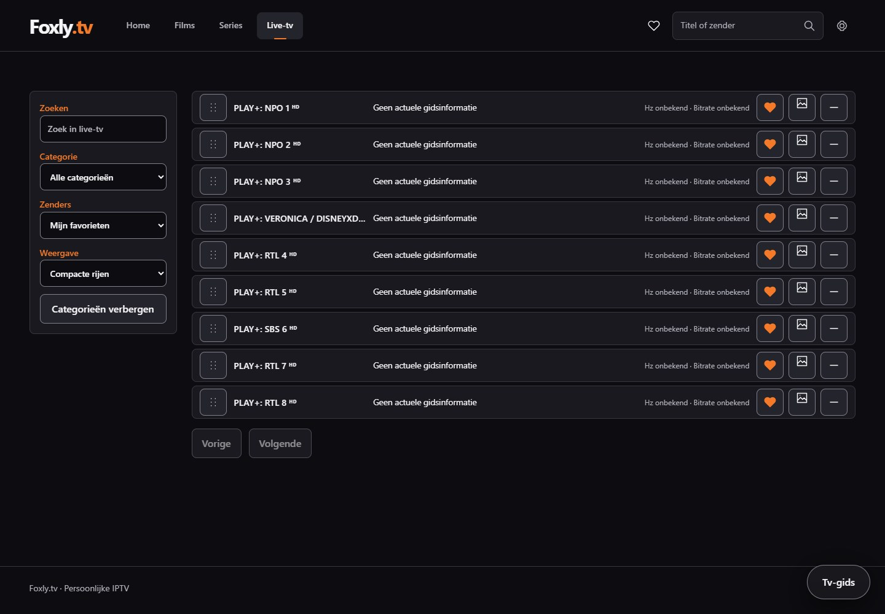
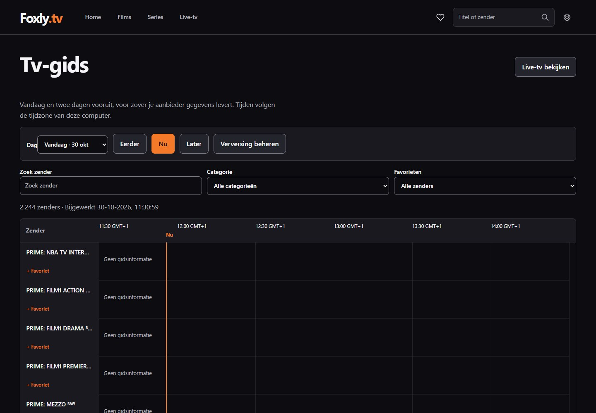
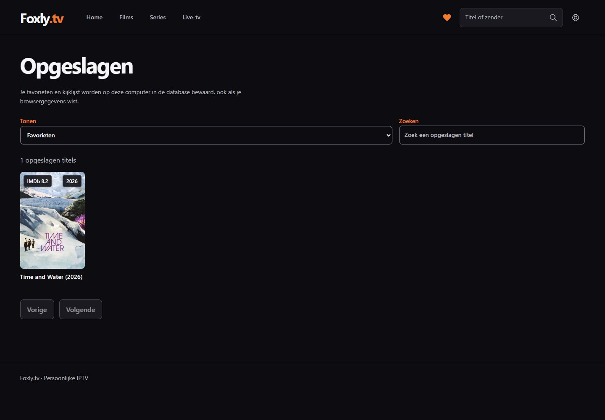
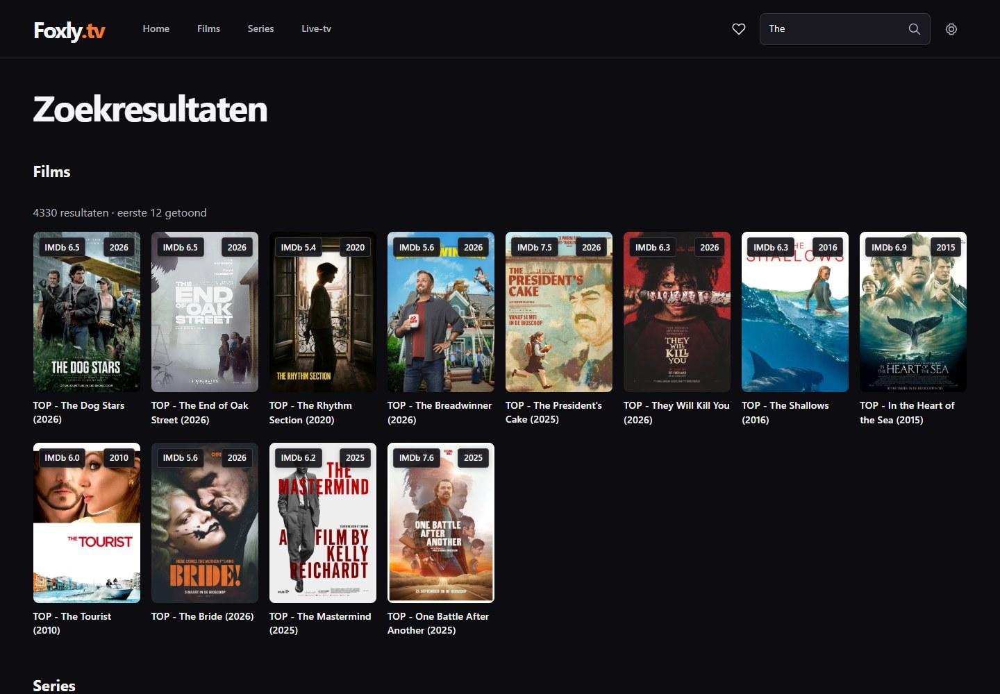
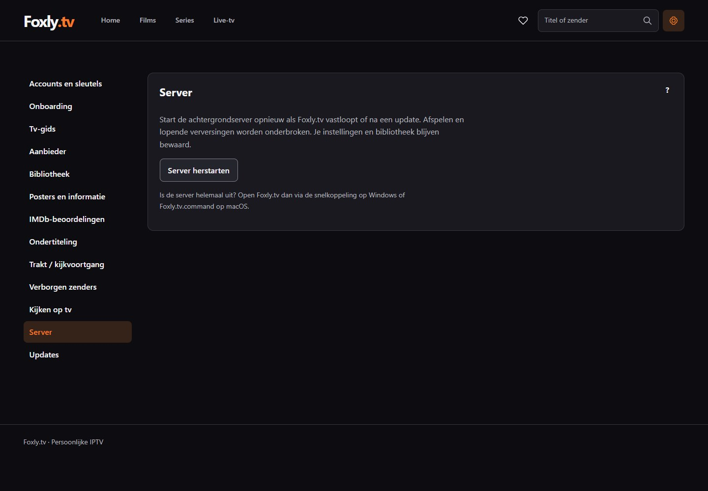

Je volgende filmavond begint hier.
Films, series en live-tv van je eigen IPTV-aanbieder, op één plek.
Versie 0.2.0 · Bekijk de app
Zo ziet FoxlyTV eruit
Echte screenshots van de huidige app, vastgelegd op . Klik op een afbeelding om deze op volledig formaat te bekijken. Het aanbod en de gids hangen af van je eigen aanbieder.








Zo start je
- Download de ZIP voor jouw computer en pak deze volledig uit.
- Open op Windows FoxlyTV starten.cmd. Open op de Mac FoxlyTV starten.command.
- Vul de inloggegevens van je eigen IPTV-aanbieder in.
Bijwerken? Stop eerst de oude versie en pak de nieuwe download uit in een nieuwe map. Je instellingen en bibliotheek blijven op dezelfde computer bewaard.